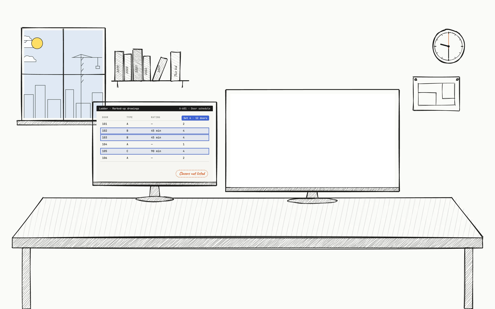
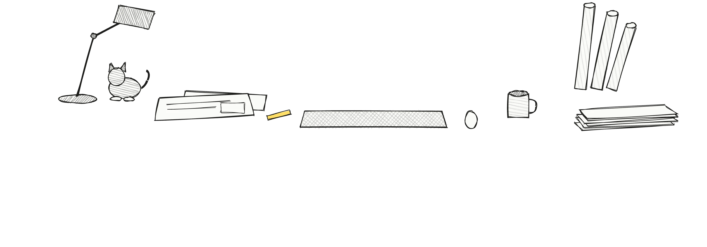

Prototype · Why Ladder
One finding, start to finish.
Scroll to follow one conflict in the documents, from the agents reading the set to the line in the estimate.

Ladder.

Spec 08 71 00 · §2.4
Set 4 → closer
Conflict
A-601 · Door schedule
Set 4 → no closer
Flagged by the openings agent
Cost engineerWhich doors use set 4? Any fire-rated? Check G-101.
8 doors are rated on G-101.
Door hardware · 08 71 00 · line 12
Closers on set 4
00 EA
Changed by the cost engineer
Door hardware sets$118k – $139k
Basis8 rated doors on G-101 get closers
Source08 71 00 · A-601 · G-101
OpenRFI #9 · the other 4 doors
Reviewed & signedCost engineer · Ladder04 / How we work
1234
Follow one finding, from the documents to the estimate.
The spec and the door schedule disagree. An agent flags it.
The engineer doesn’t take it as given, and asks for a check.
The answer changes the estimate.
Delivered with its basis, and signed.
That’s the prototype